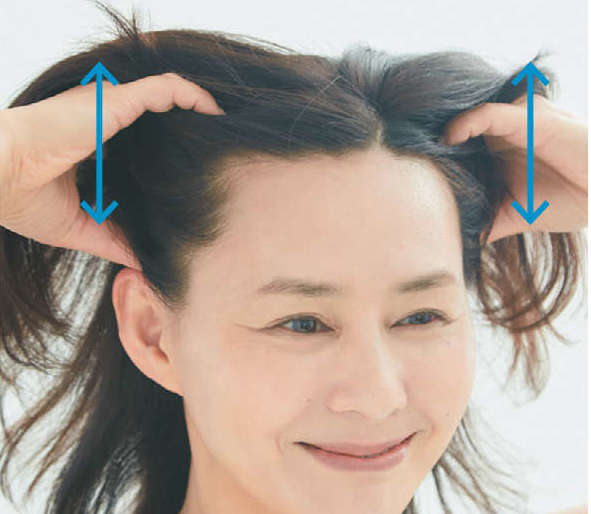
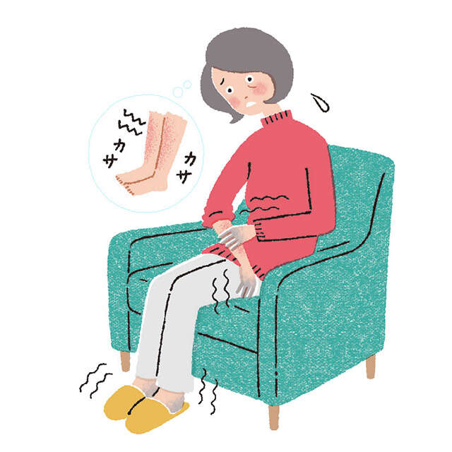
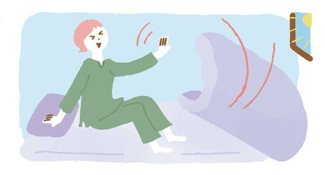
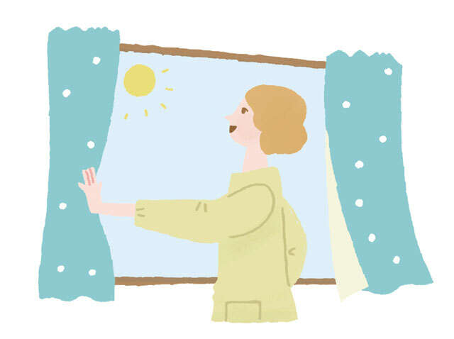
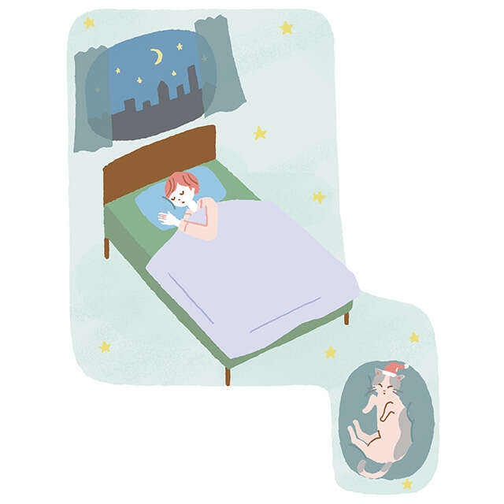
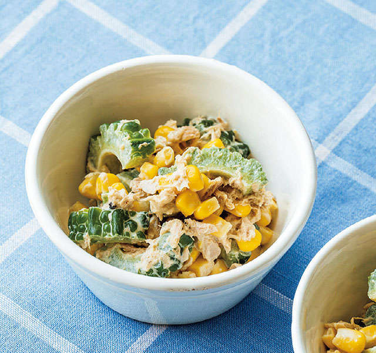
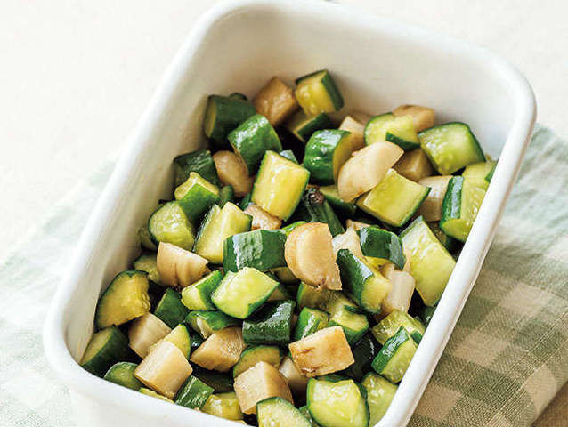
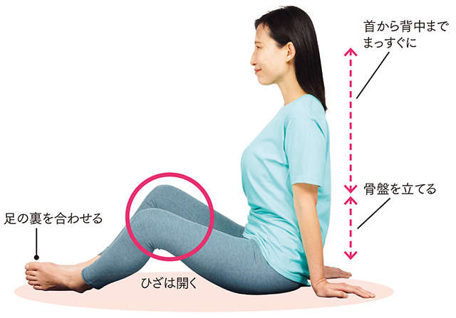

含有关键字“每日发现发布”的文章
1-

低压扰乱自主神经，浑身不舒服…… 发布日期：推荐给那些想要防止白发和脱发的人！ “睡前2分钟效果最大”的头皮按摩……
-

低压扰乱自主神经，浑身不舒服…… 发布日期：每天两杯味噌汤！ Onkatsu医生实践的“改善寒冷和干燥的7个习惯”......
-
低压扰乱自主神经，浑身不舒服…… 发布日期：
【睡眠专家来解答！睡觉时间、起床时间、安眠药……我又学会了……
-

低压扰乱自主神经，浑身不舒服…… 发布日期：蒲团和蒲团意味着“适度友好”。如何度过一夜好眠7【睡眠专家的指导...
-

低压扰乱自主神经，浑身不舒服…… 发布日期：即使是15秒的“朝日冲锋”也有效！睡眠专家教您“睡个好觉”...
-

低压扰乱自主神经，浑身不舒服…… 发布日期：【睡眠专家指导】从40岁开始浅睡、中途觉醒开始增多！你的...
-
低压扰乱自主神经，浑身不舒服…… 发布日期：
它实际上是一种很棒的蔬菜！甜菜“吃血”健康血管食谱【专家指导...
-

低压扰乱自主神经，浑身不舒服…… 发布日期：如果你想恢复活力，就试试当季的苦瓜吧！简单腌制的食物食谱，让血管变得柔顺【特...
-

低压扰乱自主神经，浑身不舒服…… 发布日期：专家告诉我们，它可以“活血化瘀”！ “黄瓜+牛蒡”的简易腌制食品食谱...
-
低压扰乱自主神经，浑身不舒服…… 发布日期：
想要血管焕发活力，就吃金针菇吧！用香菇制成的易保存食品...
-
低压扰乱自主神经，浑身不舒服…… 发布日期：
软化血管的简单黄瓜食谱[运动与健康科学的京都家光...
-

低压扰乱自主神经，浑身不舒服…… 发布日期：坐着也能做！ “髂腰肌”训练 预防跌倒训练